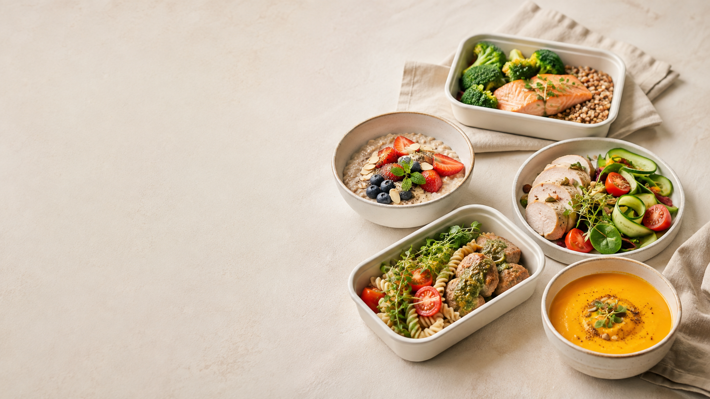
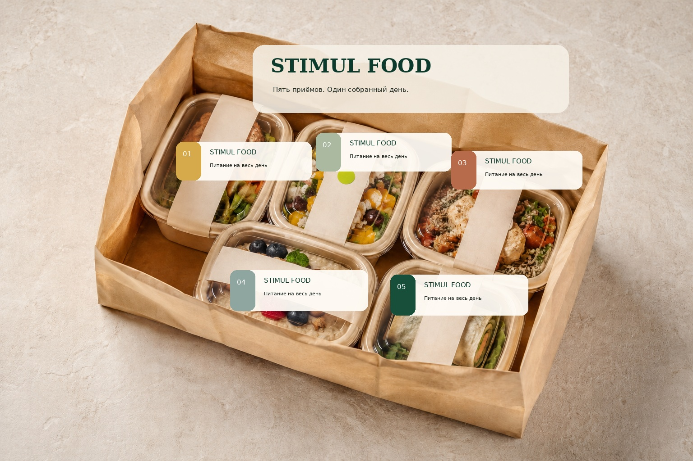

01
День 1
1582 ккал · 124.1 г белка
- 01Овсяная каша с ягодами
- 02Творожный крем с яблоком
- 03Индейка, гречка и овощи
- 04Салат с зеленью
- 05Рыба с картофелем
STIMUL FOOD берёт на себя планирование, приготовление и сборку питания на день. Вам остаётся выбрать формат и получить готовый комплект.


Один комплект закрывает рабочий день: привычные блюда, понятные порции и единая система маркировки.
На каждом контейнере — номер приёма пищи, состав, масса и рекомендации.
Меню известно заранее. Не нужно принимать новое решение перед каждым приёмом пищи.
В основе — птица, рыба, крупы, творог, овощи и понятные соусы. Без громких обещаний: вкус, удобство и нормальный рабочий день.
45.90 бел. руб. за день
Оставить заявку45.00 бел. руб. за день
Оставить заявку44.50 бел. руб. за день
Оставить заявку44.00 бел. руб. за день
Оставить заявку43.50 бел. руб. за день
Оставить заявкуЦены рассчитаны для пилотного запуска. Точные условия доставки подтверждаются при согласовании заказа.
Рецептура, масса, температура, упаковка и партия должны совпадать каждый день.
Одна утверждённая карта на каждое блюдо.
Контроль производства, хранения и передачи курьеру.
Каждый выпуск можно проследить по сырью и клиентам.
Герметичность, удобство и понятная маркировка.
Марков Павел Андреевич
автор и руководитель проекта
Мы уточним формат, район и удобный день. Оплата происходит только после подтверждения заказа.